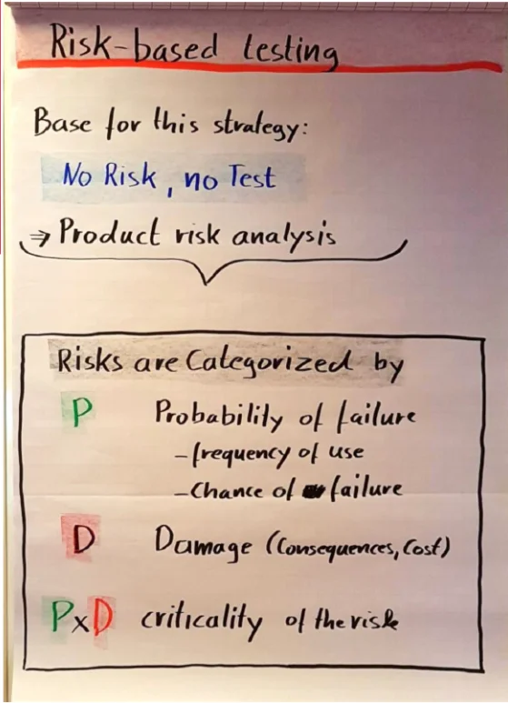
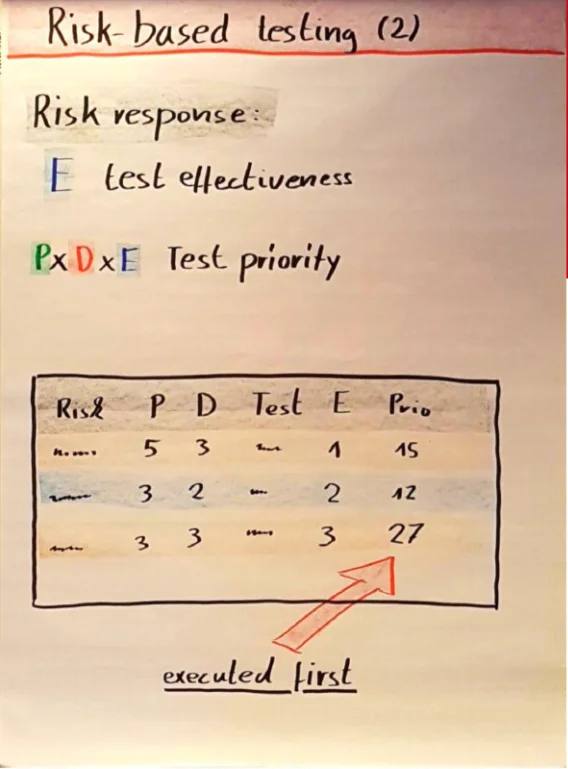
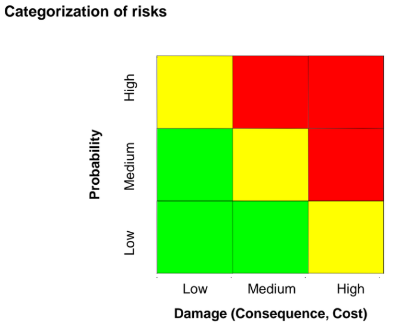
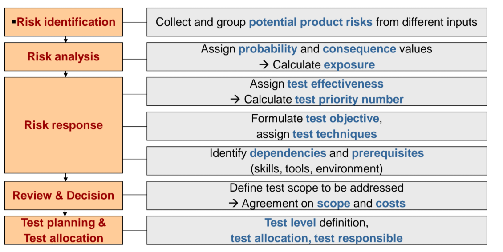
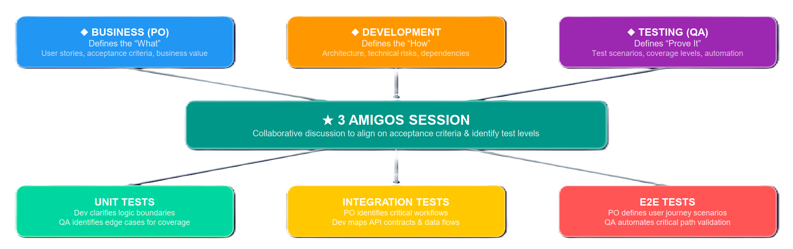

Risk Based Testing
Risk-Based Testing (RBT) is a systematic testing strategy and technique that optimizes testing effort and resource allocation based on the assessment of product and project risks. Because exhaustive software testing is not possible with limited resources and time, RBT helps identify areas where failure is most likely and where a failure would have the most severe consequences. For software architecture, this means the ability to make informed decisions about which components or architectural decisions warrant the greatest investment of effort in quality assurance and reliability verification. Testing thus moves from a reactive phase to a strategic one focused on business and technical value.
#Definitions and Basic Concepts
Risk (Risk)
- Definition: A factor that can lead to future negative consequences; it is usually expressed as the product of the likelihood of occurrence (Likelihood / Probability) and its impact (Impact / Severity).
- Significance in architecture: Helps identify vulnerable aspects of the design, critical components, and system bottlenecks.
- Significance in testing: Defines where testing capacity should be focused, because risk determines both the priority and depth of testing.
- Typical mistake: Confusing an issue with a risk – an issue has already occurred, whereas a risk is a future uncertainty.
Product Risk (Product Risk / Quality Risk)
- Definition: A risk directly associated with the test object, indicating the possibility that the system will fail to meet legitimate user needs, fail to comply with specifications, or fail in operation (for example, a calculation error, system crash, or vulnerability).
- Significance in architecture: Reflects the functional and non-functional characteristics of the product (for example, scalability, security) that the architecture must address.
- Significance in testing: Product risks can be directly reduced (mitigated) through testing. Finding a defect or, conversely, demonstrating correct functionality reduces uncertainty.
- Typical mistake: Ignoring non-functional risks in favor of functional risks during the early design stages.
Project Risk (Project Risk / Planning Risk)
- Definition: A risk concerning the management and control of the project itself that may limit the ability to achieve its objectives (for example, a lack of qualified personnel, missed deadlines, third-party problems, or environment outages).
- Significance in architecture: Limits how complex or innovative the architectural approaches a team can afford to implement may be, given its time and budget.
- Significance in testing: It cannot be "tested away". It must be managed through preventive or contingency plans (for example, deploying cloud infrastructure when test hardware fails).
- Typical mistake: Expecting that simply intensifying test execution will resolve project delays or a lack of skills within the team.
Risk Priority Number (RPN) / Degree of Risk Exposure
- Definition: A quantitative or qualitative value determining the seriousness of a risk, often calculated as the product of Probability, Impact, and sometimes Detectability or Test Effectiveness.
- Significance in architecture: Defines a clear metric (for example, 1–125 or Low/High) that provides an objective basis for component prioritization decisions.
- Significance in testing: Allows test scenarios to be ordered so that those with the highest RPN values (the most serious) are executed first.
- Typical mistake: Relying on seemingly precise numbers (quantitative data) in environments where no valid historical data is available, instead of using more effective qualitative scales.


#Types of Risks and Assessment Methods
In addition to the basic division into product (quality) risks and project risks, other classifications are also recognized:
- Business risks: Effects on profit, customer satisfaction, or competitive advantage.
- Technical risks: Associated with structure, complex code, architectural shortcomings, or the introduction of new technologies.
- Compliance risks: Consequences of failing to comply with legal and regulatory requirements.
- Depending on the direction in which a situation develops, risks are also divided into negative risks (threats of failure or loss) and positive risks (opportunities for further product development).
#Risk Assessment Methods (Risk Assessment Methods)
Risk assessment depends on the formality, size, and criticality of the system (for example, safety-critical vs. ordinary e-commerce). The sources identify two main categories:
- Lightweight methods (Lightweight):
They use simplified qualitative models (usually assessing only 2 axes: Probability and Impact) and are easy to apply across teams. These include:
- PRAM (Pragmatic Risk Analysis and Management): Based on expert consensus and does not necessarily require fully formalized requirements documentation. Allows risks to be reduced, avoided, or accepted.
- PRisMa (Product Risk Management): Focuses on easy identification of risks during the development cycle, with support for risk transfer or prevention strategies.
- SST (Systematic Software Testing): A systematic model for defining testing objectives; however, it relies directly on requirements specifications and cannot be applied effectively without them.

- Comprehensive methods (Heavy-weight):
Used primarily for mission-critical or safety-critical systems (for example, the ISO 61508 and DO-178B standards), they require in-depth analysis and detailed documentation.
- FMEA (Failure Mode and Effect Analysis): Analyzes possible failure modes. For each module, the following questions are assessed: What could fail? Why? What would the consequence be? Risk is determined on the basis of severity, occurrence, and detectability.
- FTA (Fault Tree Analysis): A top-down root cause analysis (Root Cause Analysis). Starting from an identified failure, a "fault tree" diagram is structured down to the originating defects or errors in both hardware and software.
- QFD (Quality Function Deployment): Focuses on correctly understanding user requirements and minimizes the risk of a mismatch between the final solution and customer expectations.
- Cost of Exposure: Quantitative determination of the relationship between the percentage probability of failure, the expected financial loss from such a failure in production, and the financial costs of testing and correction.
#Common Mistakes and Anti-Patterns
Performing risk analysis only at the end of the development cycle (SDLC)
- Problem and manifestation: RBT is designed to identify risks from the early design stages. Delayed analysis prevents the testing team from preparing an appropriate strategy and influencing the architecture, resulting in increased technical debt.
- Prevention: Introduce risk analysis as soon as the initial requirements have been fixed, and update it continuously (for example, at the start of each sprint in agile methodologies).
Assessing risk through a single expert (an isolated perspective)
- Problem and manifestation: A tester or architect has only their own subjective perspective. In most cases, the business impact (Impact) is assessed incorrectly, although a product owner would be better placed to determine it. The risk catalog then fails to serve its purpose.
- Prevention: Involve a broader group of so-called cross-functional stakeholders – both technical and business representatives.
"Freezing" the risk register (Absence of continuous management)
- Problem and manifestation: A risk register is created at the start of the project but is not subsequently updated. The team tests according to outdated metrics even when the actual architecture or functionality has changed.
- Prevention: Make risk review and reassessment a standard part of meetings (for example, before each release or during sprint retrospectives).
An inappropriate distribution (Clumping / Skewing) of risk ratings
- Problem and manifestation: Teams tend to rate everything as "high risk" or use poorly calibrated scales, so that, for example, 80% of risks end up in the High category. Prioritization becomes unusable.
- Prevention: Analyze the values using a histogram, introduce specific guidelines (rules) for the individual scale levels, and strive for a more optimal Gaussian distribution of risks.
#Risk-based testing strategy – Steps
RBT is normally introduced through logically connected, successive steps that determine the testing approach. This particular model includes 5 phases, which also incorporate outputs from stakeholder workshops:

#Risk identification
- Collect and group potential product risks from different inputs: This is the initial collection of risk items. These threats to product quality may come from expert interviews, previous errors recorded in logs, security alerts, and ambiguities in architectural designs and requirements. Possible failure modes (Failure modes) are thereby analyzed. The risks are then sorted into categories.
#Risk analysis
- Assign probability and consequence values: Once the risk catalog has been compiled, a stakeholder workshop is typically organized. Each risk is assigned a value for its probability of occurrence (Probability / Likelihood) and the severity of its business and operational consequences (Consequence / Damage / Impact).
- Calculate exposure: Combining probability and impact produces the overall degree of exposure to risk, known as Risk exposure. This turns the experts' initially subjective concerns into a structure that can be ranked on an objective basis.
#Risk response
- Assign test effectiveness, Calculate test priority number: Here, the confidence of testers and engineers in their ability to detect a particular risk through testing is assessed. The Test priority number (RPN / Test priority number) is calculated on the basis of exposure (Exposure) and the effectiveness of the test itself.
- Formulate test objective, assign test techniques: Each risk must have a clearly defined testing objective (for example, validation or demonstration of compliance) and an appropriate testing technique (black-box testing for data flows, static analysis for critical code, and so on). Higher risk corresponds to a more rigorous testing technique.
- Identify dependencies and prerequisites (skills, tools, environment): Identify constraints such as required tester training, missing hardware, licensing requirements for the test environment, or dependencies on external systems.
#Review & Decision
- Define test scope to be addressed, Agreement on scope and costs: Another stakeholder meeting follows to assess which risks will actually be tested and which will simply be accepted or possibly deferred because of high costs (Trade-off). The outcome is agreement on the final coverage scope and acceptance of the costs associated with that scope.
#Test planning & Test allocation
- Test level definition, test allocation, test responsible: The final step is to translate the strategy itself into task plans. The phase of the life cycle in which each test will take place is determined (for example, Unit test, Integration test, System test). Individual items are allocated to testing personnel (responsibility and resources). The plan also defines entry and exit criteria.
#“3 Amigos”
In the context of agile development and risk based testing, the 3 Amigos represent three key roles (perspectives) that must work closely together to ensure product quality and the correct focus of tests.
Business / Product Owner (PO): Defines “What” is being built. Brings the perspective of user stories (user stories), acceptance criteria, and business value.
Development / Development: Defines “How” it is being built. Focuses on architecture, technical risks, code, and dependencies.
Testing / QA: Defines the “Prove It” (Prove It) approach. Designs test scenarios, coverage levels, and automation.

#What Do They Do in the Context of Risk-Based Testing?
These three partners meet in so-called 3 Amigos sessions before sprint planning (sprint planning). Within the RBT approach, their main task is to bring different perspectives to risk assessment:
Joint risk assessment: Risk is not estimated “from behind a desk” by the tester alone. The 3 Amigos jointly assess factors such as the probability of failure $P(f)$, the impact/cost of a fault $C(f)$, and the difficulty of detection $D(f)$. The developer knows where the code is complex (high probability of error), the PO knows where an error would upset the client (high impact), and QA knows where errors are hard to find.
Determining test levels: Based on the resulting risk score, they jointly decide which test levels (Unit, Integration, E2E) to apply to the particular user story. For critical functions, they intensify testing; for trivial ones (such as a background color change), they choose only a minimal test.
Aligning acceptance criteria: They discuss the details before a single line of code is written, eliminating misunderstandings in the requirements.
#Examination Questions
Basic Questions
- Question: What is the primary difference between project risk and product risk in the context of RBT?
- Note: A good answer explains that product risk (for example, an application crash) can be mitigated by performing the test itself (finding the defect), whereas project risk (a shortage of personnel) threatens the ability to perform tests at all and is managed more through managerial contingency plans.
Intermediate Questions
- Question: Which parameters usually make up the risk priority number (RPN) assessment, and how is it obtained?
- Note: The answer must identify at least the following factors: Probability (Likelihood) and Impact (Impact/Severity), and possibly Detectability. It must mention that, in practice, these values are usually multiplied using qualitative scales (for example, 1–5) assessed by a cross-functional stakeholder team.
Advanced Questions
- Question: What are the differences between requirements-based testing (Requirements-Based Testing) and risk-based testing (Risk-Based Testing)?
- Note: The candidate should explain that Requirements-Based Testing seeks to verify every individual requirement regardless of its criticality (strict coverage). RBT, by contrast, focuses on the areas where an error would hurt the most and where it is most likely to occur. RBT deliberately biases coverage, which is more effective with limited resources.
Questions About Practical Experience
- Question: You are testing a critical system and the release date is approaching, but you discover that technical problems will prevent you from executing the entire test suite. How will you use RBT to recover the situation?
- Note: The answer should mention ordering tests by risk from the catalog (known as Drop tests in reverse risk order / Depth-first sequencing). As a recovery action, only tests in the highest-risk quadrants are performed, and management is informed of the "residual risk" of untested sections so that it can decide whether to accept those risks.
Questions About Trade-Off Decisions
- Question: Describe the trade-off between "Depth-first" and "Breadth-first" test execution strategies from the RBT perspective.
- Note: The candidate should know the advantages of both. "Depth-first" immediately tests the most demanding items in depth, maximizing early detection of severe errors, but relies on the risk assessment being correct. "Breadth-first" tests in layers so that every function (even a low-risk one) receives at least basic coverage, while also providing early feedback across the system for recalibration; however, it is less aggressive in targeting deep-seated errors.
#Model Examination Answer
(Length: 4–6 minutes of spoken delivery)
“Risk-Based Testing (RBT) is a strategic testing process whose central idea is uncertainty management. We start from the fact that, given the size of the codebase, the number of parameters, and project schedules, so-called exhaustive testing is a myth. RBT addresses this problem by prioritizing testing effort where the risk of failure is greatest and where such a failure would have the most severe consequences. It typically defines risk as the product of the probability of a problem occurring (Likelihood) and its impact (Impact).
For a software architect, RBT is a critical tool. It enables architectural solutions to be aligned with business expectations. When building complex distributed systems, architectural risk mapping helps identify which integration links or microservices represent the most vulnerable point of failure (Single Point of Failure). The architect can then initiate earlier involvement of the testing team and prepare a design that emphasizes testability (Design for Testability) in the most critical areas. For testing itself, the benefit is clear: it provides explicit guidance for allocating time and choosing techniques. Instead of applying complex pairwise design or classification trees to a trivial button-color-changing function, the tester saves capacity for testing the payment gateway.
As a practical example, imagine the development of an e-commerce platform. The payment gateway function, which integrates third-party services, carries a high level of risk because the code is complex (Probability) and the potential financial damage is enormous (Impact). By contrast, updating the page containing the user's profile photograph has a negligible impact. RBT ensures that the payment gateway is continuously subjected to automated, penetration, and integration testing, perhaps even using the FMEA technique, whereas the photo update is tested only with a basic acceptance scenario.
A common trade-off decision within RBT is testing depth versus breadth in limited time. In an agile sprint, we can choose a 'Depth-first' traversal – an aggressive focus on key items with the highest priority (for example, new API modules). The problem with this approach arises if the experts underestimated something during the initial risk analysis; the tests will not reveal the resulting 'blind spot'. We therefore often use 'Breadth-first' coverage – a broad basic test sample across the application combined with in-depth testing of critical areas.
In conclusion, RBT moves testing from an attempt to achieve meaningless 100% code coverage toward effective assessment of economic and technical impact. It provides transparent data on 'residual risk' (Residual Risk) to all of management and significantly increases confidence in deciding whether to release a system into production.”
#11. Short Version for Quick Review (Cheat Sheet)
5 Main Points
- Not everything can be tested; RBT targets effort at risky areas.
- Risk has the following components: Probability (Likelihood) and Impact (Impact).
- Tests are designed, executed, and prioritized primarily according to risk exposure.
- RBT reduces losses and delivers results in the form of “residual risk” (Residual Risk) for release decisions.
- Risk analysis must be developed by a cross-functional team of experts (stakeholders), not by an individual working in isolation.
5 Key Terms
- Quality (Product) Risk: The risk that the product will fail to meet requirements or expectations.
- Project Risk: A risk affecting schedules, budget, or the delivery of testing itself.
- Risk Priority Number (RPN): A quantitative/qualitative indicator of the urgency of a risk.
- FMEA / PRAM: Specific formalized vs. lightweight methodologies for risk analysis.
- Mitigation vs. Contingency: Prevention through error detection vs. preparing a fallback plan to minimize damage.
5 Typical Examination Questions
- What is Risk-Based Testing, and what is it used for?
- Which factors influence the calculation of Probability and Impact?
- How would you develop an RBT strategy – what are its steps?
- What is the difference between project risk and product risk in software?
- Why is it necessary to involve experts from both business and development in the assessment?
3 Most Common Mistakes
- Leaving risk identification until the phase immediately before testing starts (insufficient Shift-Left).
- Relying on subjective quantitative assessments (pseudo-precise percentages) instead of effective qualitative scales.
- Creating a risk register that the project never revisits after the kick-off phase.
1 Concise Model Sentence to Use in the Examination “When resources are scarce, Risk-Based Testing allows us to focus not on whether something will fail, but on how much it would hurt if it failed, thereby achieving an optimal reduction of residual risk before market deployment.”
#Learning outcome
This material fully covers the outcomes defined by the Learning and practice outcomes (LOPO) document:
- Discuss product risks and how to mitigate them with tests; Prioritize them with a risk based testing strategy. (The topic is covered in the "Types of Risks" and "Prioritization" sections, the explanation of RPN, and the RBT procedures).
- Apply risk based testing for architecture risks. (Incorporated into the architectural significance in the definitions and recommended for mitigating risks associated with architectural decisions, for example, in complex systems / distributed microservices, the choice of integration approaches, and so on).
#Summary in One Table
| Area | What Matters | Relationship to Architecture | Relationship to Testing | Typical Examination Question |
|---|---|---|---|---|
| Definition of risk | Likelihood × Impact. Categorization into product and project risks. | Defines the technical complexity and structural vulnerabilities of the system. | Identifies the areas where the greatest testing effort should be directed (Priority). | What does the abbreviation RPN stand for, and which components does it typically comprise? |
| Methods and models | FMEA, PRAM, QFD, FTA. Formalized vs. Lightweight approaches. | Help architects assess Single Points of Failure and interface complexity. | Determine testing approaches (Boundary Value vs. Pairwise vs. Exploratory testing). | When would you favor deploying the formal FMEA method over lightweight methods (PRAM)? |
| Preparing an RBT strategy | Risk identification, Risk analysis, Risk response, Review & Decision, Test allocation. | Enables architectural design and iteration planning to be aligned with the most critical areas (Shift-left). | Establishes a clear plan (Scope, Cost, Test levels) for test execution itself. | Describe the phases of the RBT process from risk collection through to test execution. |
| Common mistakes | An abandoned document, isolated assessment without a team, and attempts to test even low-risk operations to 100%. | Delays early prevention of design errors and slows down all of Release Management. | Exhausts capacity on unnecessary peripheral functions at the expense of core logic. | Why is it a fatal mistake for a test architect to perform risk analysis alone from behind a desk? |